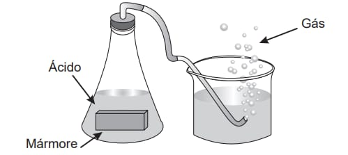
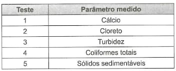
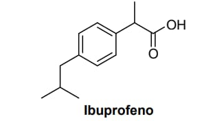
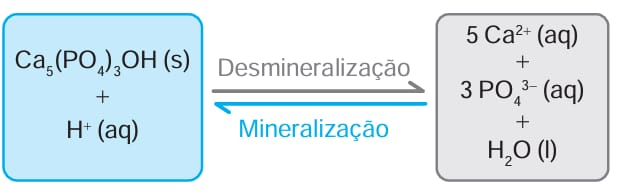
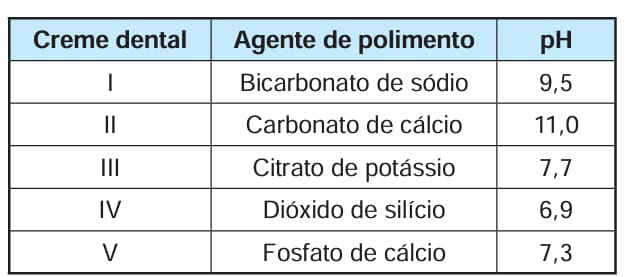
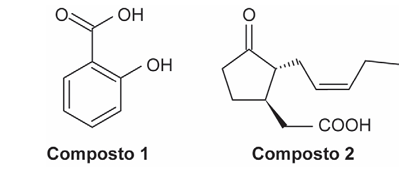
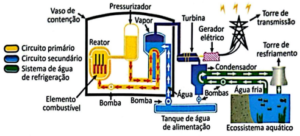

Átomo Digital
Átomo Digital
Simulado ENEM de Química
Responda às questões abaixo. Boa sorte!
1) ENEM 2022
Um grupo de alunos realizou um experimento para observar algumas propriedades dos ácidos, adicionando um pedaço de mármore (CaCO3) a uma solução aquosa de ácido clorídrico (HCl), observando a liberação de um gás e o aumento da temperatura.
O gás obtido no experimento é o:
Reação química e balanceamento
CaCO2(s)+2HCl(aq)⟶CaCl2(aq)+CO2
Mármore é principalmente carbonato de cálcio, CaCO₃ (sólido).
Ácido clorídrico fornece H⁺ que reage com o íon carbonato formando ácido
carbônico , que se decompõe em gás, e o gás observado é dióxido de carbono, CO₂.
A
evolução de gás e a reação
exotérmica justificam o aumento de temperatura.
Por isso, a alternativa correta é a letra C.
ENEM 2022
O urânio é empregado como fonte de energia em reatores nucleares. Para tanto, o seu mineral deve ser refinado, convertido a hexafluoreto de urânio e posteriormente enriquecido, para aumentar de 0,7% a 3% a abundância de um isótopo específico o urânio-235. Uma das formas de enriquecimento utiliza a pequena diferença de massa entre os hexafluoretos de urânio-235 e de urânio238 para separá-los por efusão, precedida pela vaporização. Esses vapores devem efundir repetidamente milhares de vezes através de barreiras porosas formadas por telas com grande número de pequenos orifícios. No entanto, devido à complexidade e à grande quantidade de energia envolvida, cientistas e engenheiros continuam a pesquisar procedimentos alternativos de enriquecimento.
ATKINS, P.; JONES, L. Princípios de química: questionando a vida moderna e o meio ambiente. Porto Alegre: Bookman, 2006 (adaptado).
Considerando a diferença de massa mencionada entre os dois isótopos, que tipo de procedimento alternativo ao da efusão pode ser empregado para tal finalidade?
Quando há pequenas diferenças de massa entre espécies, métodos que amplificam a diferença por força centrífuga são eficazes. A separação por centrifugação de gás (centrífuga gasosa) explora a diferença de massa/raio de difusão sob alta velocidade.
Por que as outras opções não se aplicam:
-
Peneiração:
-
Extração por solvente:
-
Destilação fracionada:
-
Separação magnética:
separa por tamanho físico (sólidos), não por massa atômica de moléculas gasosas.
separa por afinidade química/solubilidade, não por massa muito próxima.
separa por diferenças de ponto de ebulição — UF₆ é todo o mesmo composto químico com isotopólogos que têm pontos muito próximos; não é prático.
isótopos de urânio não são separados magneticamente de forma útil (não há momento magnético ligado à massa).
Por isso, a alternativa correta é a letra B.
ENEM 2023
Um garoto comprou vários abacates na feira, mas descobriu que eles não estavam maduros o suficiente para serem consumidos. Sua mãe recomendou que ele colocasse os abacates em um recipiente fechado, pois isso aceleraria seu amadurecimento. Com certa dúvida, o garoto realizou esta experiência: colocou alguns abacates no recipiente e deixou os demais em uma fruteira aberta. Surpreendendo-se, ele percebeu que os frutos que estavam no recipiente fechado amadureceram mais rapidamente.
A aceleração desse processo é causada por
Observação experimental:
Abacates no recipiente fechado amadurecem mais rápido.
Fisiologia dos frutos:
Abacate é fruto climatérico — durante o amadurecimento ele produz e
responde ao gás etileno (C₂H₄), um hormônio gasoso vegetal que acelera processos de maturação.
Em recipiente fechado, o etileno liberado fica retido e se acumula, aumentando a taxa de amadurecimento.
Por isso, a alternativa correta é a letra A.
ENEM 2023
O consumo exagerado de refrigerantes é preocupante, pois contribui para o aumento de casos de obesidade e diabetes. Considere dois refrigerantes enlatados, um comum e um diet, e que ambos possuam a mesma quantidade de aditivos, exceto pela presença de açúcar. O refrigerante comum contém basicamente água carbonatada e grande quantidade de açúcar; já o refrigerante diet tem água carbonatada e adoçantes, cujas massas são muito pequenas.
CAVAGIS, A. D. M.; PEREIRA, E. A.; OLIVEIRA, L. C. Um método simples para avaliar o teor de sacarose e CO₂ em refrigerantes. Química Nova na Escola, n. 3, ago. 2014 (adaptado).
Entre as duas versões apresentadas, o refrigerante comum possui:
Densidade
𝜌 é massa/volume. Quando se dissolve uma quantidade significativa
de soluto (açúcar) em um dado volume de água, a massa total aumenta mais do
que o volume (o volume aumenta, mas menos proporcionalmente que a massa),
portanto a densidade aumenta.
O refrigerante comum tem muito mais massa de solutos
por litro que o diet,
logo massa por volume maior → maior densidade.
Viscosidade tende a aumentar com solutos, então menor viscosidade está incorreto.
O volume de gás dissolvido depende da pressão parcial de CO₂ e da temperatura, não do açúcar em si; açúcar não necessariamente aumenta o volume de gás dissolvido.
O ponto de congelamento se reduz com solutos (efeito crioscópico), portanto “maior temperatura de congelamento” está errado.
Por isso, a alternativa correta é a letra A.
ENEM 2023
Em uma indústria, o controle da dureza da água é importante quando ela é utilizada em caldeiras, uma vez que sais pouco solúveis, formados a partir de sulfatos e carbonatos, podem acumular-se no interior das tubulações, causando obstruções. Para avaliar a água utilizada nessa indústria, foram realizados testes de qualidade que consideraram os seguintes parâmetros:
A formação de sais pouco solúveis, como carbonatos e sulfatos, pode ocorrer e se acumular nas tubulações, ocasionando sua obstrução. O parâmetro relacionado a essa formação de sais é a concentração de cálcio, já que ele dá origem ao carbonato de cálcio e ao sulfato de cálcio, ambos de baixa solubilidade.
Por isso, a alternativa correta é a letra A.
ENEM 2023
Entre os medicamentos mais comuns consumidos para o alívio da dor está o ibuprofeno, um composto quiral com ação anti-inflamatória e efeito analgésico, que é comercializado como fármaco opticamente puro, ou seja, sem a mistura com outro isômero óptico. A fórmula estrutural plana do ibuprofeno é:
Além do ibuprofeno, destacam-se também os principios ativos a seguir, presentes em outros medicamentos para o alívio da dor:

O principio ativo que apresenta o mesmo tipo de isomeria espacial que o ibuprofeno é o(a)
O ibuprofeno é uma molécula quiral e, por esse motivo, apresenta isomeria óptica, consequência da presença de um carbono assimétrico. Da mesma forma, o butilbrometo de escopolamina também possui carbono assimétrico e exibe isomeria óptica.
Por isso, a alternativa correta é a letra E.
ENEM 2024
O magnésio metálico utilizado em ligas leves é produzido em um processo que envolve várias etapas e utiliza água do mar como matéria-prima. A primeira etapa desse processo consiste na reação entre o ion Mg2+ e hidróxido de cálcio, Ca(OH)2, obtendo uma mistura que contém hidróxido de magnésio, pouco solúvel, e íons Ca2+, de acordo com a equação química:
Mg2+ (aq) + Ca(OH)2 (aq) → Mg(OH)2 (s) + Ca2+ (aq)
O método adequado para separar o Mg(OH)2 dessa mistura é a:
Equação fornecida
Mg2+(aq)+Ca(OH)2(aq)⟶Mg(OH)2(s)+Ca2+(aq)
O que se formou:
Mg(OH)₂ em sólido pouco solúvel (precipitado) misturado com uma solução
que contém Ca²⁺.
Método de separação adequado:
quando se tem um sólido sólido/coloidal disperso em um
líquido, o método adequado é filtração — separar sólido por retenção em filtro, coletando o sólido
no filtro e o líquido passando.
Por isso, a alternativa correta é a letra A.
ENEM 2024
A hidroxiapatita, Ca5 (PO4)3OH, é um mineral constituinte do esmalte dos dentes. Entre as diversas reações que ocorrem no meio bucal, encontram-se em equilíbrio as reações de desmineralização e mineralização da hidroxiapatita em meio aquoso, ilustradas a seguir. A desmineralização está associada à fragilização do esmalte do dente e à formação de cáries.
O uso de creme dental pode minimizar a perda da hidroxiapatita. O quadro apresenta o agente de polimento e o pH de alguns cremes dentais comerciais.
STORGATTO, G. A.; BRAIBANTE, M. E.”F.; BRAIBANTE, H. T. S. A química na odontologia. Química Nova na Escola, v.’39, fev. 2017 (adaptado).
Considerando o equilíbrio químico envolvido, qual creme dental promove a maior desmineralização do esmalte do dente?
Um pH mais ácido, como o valor 6,9, intensifica a desmineralização do esmalte dentário porque aumenta a concentração de íons H⁺ no ambiente. Esse acréscimo de H⁺ desloca o equilíbrio químico da hidroxiapatita, favorecendo sua dissolução.
Entre os cremes analisados, o creme IV é o que provoca maior desmineralização, pois apresenta o pH mais baixo. O ambiente mais ácido gera maior quantidade de íons H⁺, promovendo a dissolução da hidroxiapatita e enfraquecendo o esmalte dos dentes.
Por isso, a alternativa correta é a letra D.
ENEM 2024
Os pesticidas naturais vêm sendo utilizados no controle de pragas e doenças agrícolas como substituintes de pesticidas sintéticos tradicionais, por serem menos nocivos ao ambiente, biodegradáveis e minimizarem custos e riscos relativos à lavoura. Por exemplo, os compostos 1 e 2 estão envolvidos nas respostas de defesa das plantas. Os grupos funcionais presentes nesses compostos são importantes para suas propriedades no controle de pragas.
PINTO-ZEVALLOS, D. M.; ZARBIN, P. H. G. A química na agricultura: perspectivas para o desenvolvimento de tecnologias sustentáveis. Química Nova, n. 10, 2013 (adaptado).
Qual é a função orgânica correspondente ao grupo funcional comum presente nesses dois compostos?
Composto 1:
Apresenta um grupo –COOH ligado diretamente a um anel
benzênico, caracterizando um derivado do ácido benzóico com a presença
adicional de um grupo hidroxila. Assim, sua função orgânica principal é a de
ácido carboxílico.
Composto 2:
Também contém o grupo –COOH, além de outras funções
orgânicas, como uma cetona (C=O) e uma cadeia carbônica com ligação dupla
Apesar das diferenças estruturais, o grupo funcional comum aos dois compostos é o ácido carboxílico, correspondente à carboxila (–COOH).
Por isso, a alternativa correta é a letra A.
ENEM 2024
O biogás é uma alternativa energética muito importante, pois, além de reduzir a dependência por combustíveis fósseis, sua obtenção pode ser realizada a partir de resíduos da produção agroindustrial. Considere que o biogás produzido em um empreendimento de suinocultura contém 70% em volume de metano (massa molar 16 g/mol; volume molar 22 L/mol). Ele será utilizado para geração de energia em substituição ao etanol (massa molar 46 g/mol) em um gerador no qual 1 m³ de biogás de origem suína substitui 0,59 L de etanol anidro (densidade 0,78 g/mL).
Nessas condições, a massa de metano necessária para substituir 10 mol de etanol na produção de energia é mais próxima de:
O etanol
tem massa molar
de 46 g/mol.
10 mol × 46 g/mol= 460g
Densidade
do etanol: 0,78 g/mL.
V= 460/0,78 ≈ 590 mL = 0,590mL
Como o biogás tem 70% de CH₄:
1 m3 × 0,70 = 0,70 m3 = 700 L
Usando 22 L/mol para gases:
n=22 / 700 ≈ 31,8 mol
Massa molar do CH₄
= 16 g/mol.
31,8 × 16= 508,8 g ≈ 510 g
≈ 0,590 L de etanol
equivalem a ≈ 510 g de CH₄
no biogás.
Por isso, a alternativa correta é a letra C.
ENEM 2025
Existe um processo de purificação de água em que são removidos os sais dissolvidos. A água que passa por esse processo é muito utilizada em laboratórios de química, em indústrias (como solvente), em baterias de carros etc. Entretanto, esse tipo de água não é adequado para ingestão, pois pode causar problemas de saúde, como carência iônica e diarreia.
Essa água é chamada de:
Trata-se de água destilada, uma vez que o método de purificação mencionado no enunciado é a destilação.
A destilação simples permite separar misturas homogêneas constituídas por um sólido dissolvido em um líquido, como ocorre na retirada dos sais presentes na água descrita no texto.
Por isso, a alternativa correta é a letra D.
ENEM 2025
As usinas termonucleares são aquelas que produzem energia elétrica a partir da geração de energia térmica proveniente das reações nucleares. Normalmente, essas usinas funcionam por meio de dois circuitos, denominados circuito primário (vaso de pressão, pressurizador e bomba) e circuito secundário (gerador de vapor, turbina, condensador, tanque de alimentação e bombas), além de um sistema de água de refrigeração, formado por uma bomba ligada a uma fonte hídrica natural.
Durante a operação da usina, se o sistema de água de refrigeração funcionar de forma ineficiente pode causar poluição térmica, comprometendo a vida no ecossistema aquático.
Disponível em: www.eletronuclear.gov.br. Acesso em: 29 nov. 2021 (adaptado).
Para o ecossistema aquático, a ineficiência do sistema de água de refrigeração tem como consequência a:
A baixa eficiência do sistema de refrigeração resulta no aumento da temperatura do ecossistema aquático.
Esse aquecimento reduz a solubilidade dos gases na água e, consequentemente, diminui a quantidade de oxigênio dissolvido. Essa redução pode comprometer a sobrevivência de diversos organismos aquáticos, levando-os à morte.
Por isso, a alternativa correta é a letra E.
ENEM 2025
A química nuclear é uma importante ferramenta na produção de substâncias utilizadas na área da saúde humana. A radiação emitida pelo cobalto-60 é utilizada na medicina como ferramenta de diagnóstico e no tratamento do câncer. No entanto, esse radioisótopo tem um tempo de armazenamento limitado, pois seu tempo de meia-vida é de 5,3 anos. Considere um frasco com uma amostra contendo 2,00 mg de cobalto-60, armazenado durante um período de 26,5 anos
A massa de cobalto-60, em miligrama, que restará ao final desse tempo é mais próxima de:
O tempo de meia-vida corresponde ao intervalo necessário para que metade da quantidade inicial de uma substância radioativa se desintegre.
No exercício, o tempo de meia-vida é de 5,3 anos.
Para descobrir quantos períodos de meia-vida transcorreram, divide-se o tempo total pelo tempo de meia-vida:
Assim, temos n = 5
períodos de meia-vida.
-
: massa inicial
-
: massa final
-
: número de meias-vidas transcorridas
Mf = M0= 2 mg / 25 = 2 mg / 32
Mf = 0,0625 mg
Por isso, a alternativa correta é a letra E.
ENEM 2025
Objetos de prata escurecem em contato com compostos contendo enxofre por causa da formação de uma fina camada de sulfeto de prata. Um método simples para clarear o objeto consiste em forrar um recipiente com papel alumínio, adicionar ao recipiente uma solução aquosa de cloreto de sódio e, enfim, mergulhar o objeto de prata enegrecido. Em cerca de três minutos, a prata volta à coloração original. As seguintes semirreações e os respectivos potenciaispadrão de redução são úteis para a compreensão dos fenômenos ocorridos.
Ag₂S (s) + 2 e 2 Ag (s) + S² (aq). -0,69 V
O2 (g) +4 H+ (aq) + 4 e 2 H₂O (I). +1,23 V
Al3+ (aq) + 3 e → Al (s). -1,68 V
SARTORI, E. R.; BATISTA, E. F.; FATIBELLO-FILHO, O. Escurecimento e limpeza de objetos de prata: um experimento simples e de fácil execução envolvendo reações de oxidação-redução. Química Nova na Escola, n. 30,’2008 (adaptado).
Os valores das diferenças de potencial-padrão das reações que representam o escurecimento e o clareamento do objeto de prata são, respectivamente:
Reações de escurecimento devido à oxidação da prata:
4 Ag(s) + 2S-2 (aq)—› 2Ag2S(s)+ 4e–. – 0, 69 V
O2(s) + 4H+ (aq) + 4 e– —› 2H2O (l). + 1, 23 V
ddp = + 1,92 V
Reações de clareamento devido à redução da prata:
3 Ag2S(s) + 6 e– —› 6 Ag(s)+ 3 S 2- (aq). – 0, 69 V
2 Al(s) + 2 Al(aq)3+ —› 6 e–. + 1, 23 V
ddp = + 1,92 V
Por isso, a alternativa correta é a letra B.